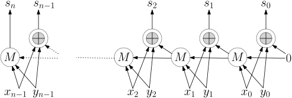
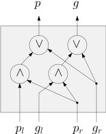
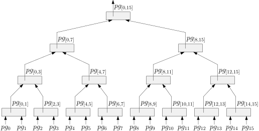
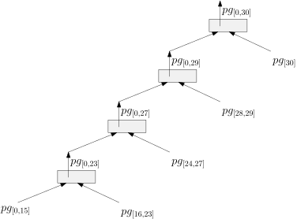
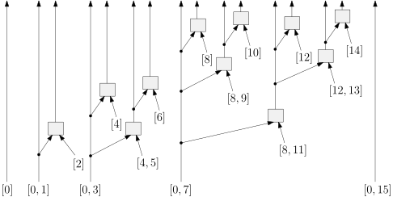
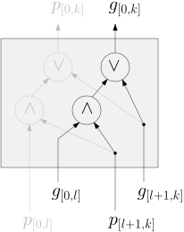

2.3 Binär-Addierer./course1/wly/02/03-binary-adder.wly:2:11
2.3 Binär-Addierer./course1/wly/02/03-binary-adder.wly:2:11
Schaltkreise, der zwei Binärzahlen addieren können, finden./course1/wly/02/03-binary-adder.wly:7:5 Sie heutzutage wahrscheinlich in jedem besseren./course1/wly/02/03-binary-adder.wly:8:5 Haushaltsgerät (und wenn Sie ein gegen Covid-19 geimpfter./course1/wly/02/03-binary-adder.wly:9:5 Verschwörungstheoretiker sind, dann höchstwahrscheinlich./course1/wly/02/03-binary-adder.wly:10:5 auch in Ihrem Blut). Grund genug, sich diese genauer./course1/wly/02/03-binary-adder.wly:11:5 anzuschauen. Genau wie bei der Addition von Dezimalzahlen./course1/wly/02/03-binary-adder.wly:12:5 gibt es pro Stelle ein Ergebnis und einen Übertrag./course1/wly/02/03-binary-adder.wly:13:5 (Englisch ./course1/wly/02/03-binary-adder.wly:14:5carry./course1/wly/02/03-binary-adder.wly:14:16);./course1/wly/02/03-binary-adder.wly:14:22 beispielsweise ergibt "sechs plus acht./course1/wly/02/03-binary-adder.wly:14:22 plus sieben = eins, zwei gemerkt", und die 2 muss dann zu./course1/wly/02/03-binary-adder.wly:15:5 den links daneben stehenden Ziffern addiert werden. Binär./course1/wly/02/03-binary-adder.wly:16:5 ist alles viel einfacher, weil man sich nur 0 oder 1 merken./course1/wly/02/03-binary-adder.wly:17:5 muss../course1/wly/02/03-binary-adder.wly:18:5
Das Carry wird dann der eins weiter links stehenden Stelle./course1/wly/02/03-binary-adder.wly:30:5 zur Addition weitergegeben. Aber halt! Das heißt doch, dass./course1/wly/02/03-binary-adder.wly:31:5 wir in der nächsten Stelle ./course1/wly/02/03-binary-adder.wly:32:5drei./course1/wly/02/03-binary-adder.wly:32:33 Bits addieren müssen: das./course1/wly/02/03-binary-adder.wly:32:38 von ./course1/wly/02/03-binary-adder.wly:33:5$x$./course1/wly/02/03-binary-adder.wly:33:9,./course1/wly/02/03-binary-adder.wly:33:12 das von ./course1/wly/02/03-binary-adder.wly:33:12$y$./course1/wly/02/03-binary-adder.wly:33:22,./course1/wly/02/03-binary-adder.wly:33:25 und das eingehende Carry ./course1/wly/02/03-binary-adder.wly:33:25$\cin$./course1/wly/02/03-binary-adder.wly:33:52../course1/wly/02/03-binary-adder.wly:33:58 ./course1/wly/02/03-binary-adder.wly:33:58 Daraus berechnet sich das Output-Bit ./course1/wly/02/03-binary-adder.wly:34:5$s$./course1/wly/02/03-binary-adder.wly:34:42 und das./course1/wly/02/03-binary-adder.wly:34:45 ausgehende Carry ./course1/wly/02/03-binary-adder.wly:35:5$\cout$./course1/wly/02/03-binary-adder.wly:35:22,./course1/wly/02/03-binary-adder.wly:35:29 das nach links weitergegeben./course1/wly/02/03-binary-adder.wly:35:29 wird. Unsere Tabelle ist also etwas größer:./course1/wly/02/03-binary-adder.wly:36:5
Glücklicherweise muss man sich diese Tabelle nicht merken,./course1/wly/02/03-binary-adder.wly:52:5 es gilt nämlich./course1/wly/02/03-binary-adder.wly:53:5
Die Funktion Maj haben wir schon oben kennengelernt; sie./course1/wly/02/03-binary-adder.wly:60:5 gibt 1 aus, wenn mindestens zwei ihrer drei Input-Bits 1./course1/wly/02/03-binary-adder.wly:61:5 sind. Wir kürzen Sie im folgenden mit ./course1/wly/02/03-binary-adder.wly:62:5$M$./course1/wly/02/03-binary-adder.wly:62:43 ab. Hier ist nun./course1/wly/02/03-binary-adder.wly:62:46 unser ./course1/wly/02/03-binary-adder.wly:63:5$n$./course1/wly/02/03-binary-adder.wly:63:11 -Bit-Addierer:./course1/wly/02/03-binary-adder.wly:63:14

course1/public/img/circuits/adder-ripple.svgWir numerieren unsere Variablen von ./course1/wly/02/03-binary-adder.wly:70:5$0, \dots,n-1$./course1/wly/02/03-binary-adder.wly:70:41,./course1/wly/02/03-binary-adder.wly:70:55 damit./course1/wly/02/03-binary-adder.wly:70:55 wir die repräsentierte natürliche Zahl bequem als./course1/wly/02/03-binary-adder.wly:71:5 ./course1/wly/02/03-binary-adder.wly:72:5$\sum_{i=0}^n x_i 2^i$./course1/wly/02/03-binary-adder.wly:72:5 schreiben können. Beachten Sie auch./course1/wly/02/03-binary-adder.wly:72:27 die unvermittelt rechts stehende 0. Streng genommen lässt./course1/wly/02/03-binary-adder.wly:73:5 unsere Definition von Schaltkreisen so etwas nicht zu;./course1/wly/02/03-binary-adder.wly:74:5 allerdings ist es recht einfach, die Definition./course1/wly/02/03-binary-adder.wly:75:5 entsprechend zu verallgemeinern, oder aber den obigen./course1/wly/02/03-binary-adder.wly:76:5 Schaltkreis zu vereinfachen: ./course1/wly/02/03-binary-adder.wly:77:5$M(x,y,0)$./course1/wly/02/03-binary-adder.wly:77:34 würde dann zum./course1/wly/02/03-binary-adder.wly:77:44 Beispiel einfach zu ./course1/wly/02/03-binary-adder.wly:78:5$x \wedge y$./course1/wly/02/03-binary-adder.wly:78:25 werden). Wie groß ist./course1/wly/02/03-binary-adder.wly:78:37 dieser Schaltkreis? Wenn wir jedes ./course1/wly/02/03-binary-adder.wly:79:5$\oplus$./course1/wly/02/03-binary-adder.wly:79:41-./course1/wly/02/03-binary-adder.wly:79:49 und ./course1/wly/02/03-binary-adder.wly:79:49$M$./course1/wly/02/03-binary-adder.wly:79:55 ./course1/wly/02/03-binary-adder.wly:79:58 -Gate als ./course1/wly/02/03-binary-adder.wly:80:5ein./course1/wly/02/03-binary-adder.wly:80:16Gate./course1/wly/02/03-binary-adder.wly:80:20 zählen, so haben wir insgesamt ./course1/wly/02/03-binary-adder.wly:80:20$2n$./course1/wly/02/03-binary-adder.wly:80:56 ./course1/wly/02/03-binary-adder.wly:80:60 innere Gates und ./course1/wly/02/03-binary-adder.wly:81:5$2n$./course1/wly/02/03-binary-adder.wly:81:22 Input-Gates. Wenn wir darauf./course1/wly/02/03-binary-adder.wly:81:26 bestehen, ./course1/wly/02/03-binary-adder.wly:82:5$\oplus$./course1/wly/02/03-binary-adder.wly:82:15-./course1/wly/02/03-binary-adder.wly:82:23 und ./course1/wly/02/03-binary-adder.wly:82:23$M$./course1/wly/02/03-binary-adder.wly:82:29-Gates./course1/wly/02/03-binary-adder.wly:82:32 aus AND/OR/NOT zu./course1/wly/02/03-binary-adder.wly:82:32 basteln, haben wir mehr, allerdings in jedem Fall ./course1/wly/02/03-binary-adder.wly:83:5$O(n)$./course1/wly/02/03-binary-adder.wly:83:55 ./course1/wly/02/03-binary-adder.wly:83:61 viele../course1/wly/02/03-binary-adder.wly:84:5
Übungsaufgabe 2.3.1./course1/wly/02/03-binary-adder.wly:86:5 ./course1/wly/02/03-binary-adder.wly:86:5 Bauen Sie einen Schaltkreis oneBitAdder:./course1/wly/02/03-binary-adder.wly:87:9 ./course1/wly/02/03-binary-adder.wly:88:9$\{0,1\}^3 \rightarrow \{0,1\}^2$./course1/wly/02/03-binary-adder.wly:88:9 für folgende./course1/wly/02/03-binary-adder.wly:88:42 Funktionalität:./course1/wly/02/03-binary-adder.wly:89:9
Versuchen Sie, so wenig Gates wie möglich zu verwenden../course1/wly/02/03-binary-adder.wly:96:9 Entscheiden Sie sich im Voraus, ob Sie beliebigen Fan-in./course1/wly/02/03-binary-adder.wly:97:9 erlauben wollen oder auf Fan-in 2 bestehen../course1/wly/02/03-binary-adder.wly:98:9
Eine Größe von ./course1/wly/02/03-binary-adder.wly:100:5$O(n)$./course1/wly/02/03-binary-adder.wly:100:20 ist gut; besseres können wir nicht./course1/wly/02/03-binary-adder.wly:100:26 wirklich erwarten, schließlich muss der Schaltkreis ja./course1/wly/02/03-binary-adder.wly:101:5 allein schon ./course1/wly/02/03-binary-adder.wly:102:5$n$./course1/wly/02/03-binary-adder.wly:102:18 Input-Gates haben. Wie steht es mit der./course1/wly/02/03-binary-adder.wly:102:21 Tiefe? Wenn wir jedes ./course1/wly/02/03-binary-adder.wly:103:5$\oplus$./course1/wly/02/03-binary-adder.wly:103:27 und ./course1/wly/02/03-binary-adder.wly:103:35$M$./course1/wly/02/03-binary-adder.wly:103:40 als Gate./course1/wly/02/03-binary-adder.wly:103:43 betrachten, dann hat der Pfad von ./course1/wly/02/03-binary-adder.wly:104:5$x_0$./course1/wly/02/03-binary-adder.wly:104:39 zu ./course1/wly/02/03-binary-adder.wly:104:44$s_n$./course1/wly/02/03-binary-adder.wly:104:48 die Länge./course1/wly/02/03-binary-adder.wly:104:53 ./course1/wly/02/03-binary-adder.wly:105:5$n$./course1/wly/02/03-binary-adder.wly:105:5 (beachten Sie: das ganz links stehende ./course1/wly/02/03-binary-adder.wly:105:8$M$./course1/wly/02/03-binary-adder.wly:105:48 ist streng./course1/wly/02/03-binary-adder.wly:105:51 genommen bereits das Output-Gate; die ausgehende Kante./course1/wly/02/03-binary-adder.wly:106:5 ./course1/wly/02/03-binary-adder.wly:107:5$s_n$./course1/wly/02/03-binary-adder.wly:107:5 ist also vielmehr ein Output-Label als eine./course1/wly/02/03-binary-adder.wly:107:10 ausgehende Kante und daher bei der Tiefenbestimmung nicht./course1/wly/02/03-binary-adder.wly:108:5 mitgezählt). Der Addier-Schaltkreis hat also Tiefe ./course1/wly/02/03-binary-adder.wly:109:5$n$./course1/wly/02/03-binary-adder.wly:109:56../course1/wly/02/03-binary-adder.wly:109:59 ./course1/wly/02/03-binary-adder.wly:109:59 Eine Tiefe von ./course1/wly/02/03-binary-adder.wly:110:5$\Omega(n)$./course1/wly/02/03-binary-adder.wly:110:20 ist in der Regel nicht gut../course1/wly/02/03-binary-adder.wly:110:31 Idealerweise streben wir eine Tiefe von ./course1/wly/02/03-binary-adder.wly:111:5$\log n$./course1/wly/02/03-binary-adder.wly:111:45 an (oder./course1/wly/02/03-binary-adder.wly:111:53 wenn wir besonders ambitionert sind und beliebig großen./course1/wly/02/03-binary-adder.wly:112:5 Fan-in zulassen, sogar konstante Tiefe ./course1/wly/02/03-binary-adder.wly:113:5$O(1)$./course1/wly/02/03-binary-adder.wly:113:44 )../course1/wly/02/03-binary-adder.wly:113:50
Tiefenmässig hat uns der obige Addierer nicht befriedigt../course1/wly/02/03-binary-adder.wly:118:5 Das Problem ist, dass das Carry im schlimmsten Fall von./course1/wly/02/03-binary-adder.wly:119:5 ganz rechts nach ganz links durchrasseln muss, zum Beispiel./course1/wly/02/03-binary-adder.wly:120:5 wenn man ./course1/wly/02/03-binary-adder.wly:121:5$11111111 + 00000001$./course1/wly/02/03-binary-adder.wly:121:14 berechnet. So einen./course1/wly/02/03-binary-adder.wly:121:35 Addierer nennt ./course1/wly/02/03-binary-adder.wly:122:5man./course1/wly/02/03-binary-adder.wly:122:5ripple-carry adder./course1/wly/02/03-binary-adder.wly:122:24../course1/wly/02/03-binary-adder.wly:122:43 Geringere Tiefe./course1/wly/02/03-binary-adder.wly:122:43 erreicht man mit ./course1/wly/02/03-binary-adder.wly:123:5Carry Lookahead./course1/wly/02/03-binary-adder.wly:123:23../course1/wly/02/03-binary-adder.wly:123:39 Hier versuchen wir, im./course1/wly/02/03-binary-adder.wly:123:39 Voraus bereits das Carry auf Position ./course1/wly/02/03-binary-adder.wly:124:5$i$./course1/wly/02/03-binary-adder.wly:124:43 zu berechnen,./course1/wly/02/03-binary-adder.wly:124:46 ohne erst das auf Position ./course1/wly/02/03-binary-adder.wly:125:5$i-1$./course1/wly/02/03-binary-adder.wly:125:33 abzuwarten. Es lohnt,./course1/wly/02/03-binary-adder.wly:125:38 ein paar Dinge formaler zu definieren: ./course1/wly/02/03-binary-adder.wly:126:5$c_i$./course1/wly/02/03-binary-adder.wly:126:44 ist das./course1/wly/02/03-binary-adder.wly:126:49 Carry, das von Position ./course1/wly/02/03-binary-adder.wly:127:5$i-1$./course1/wly/02/03-binary-adder.wly:127:29 an Position ./course1/wly/02/03-binary-adder.wly:127:34$i$./course1/wly/02/03-binary-adder.wly:127:47 übergeben./course1/wly/02/03-binary-adder.wly:127:50 wird; ./course1/wly/02/03-binary-adder.wly:128:5$s_i$./course1/wly/02/03-binary-adder.wly:128:11 ist das ./course1/wly/02/03-binary-adder.wly:128:16$i$./course1/wly/02/03-binary-adder.wly:128:25-te./course1/wly/02/03-binary-adder.wly:128:28 Bit der Summe (von rechts nach./course1/wly/02/03-binary-adder.wly:128:28 links zählend, bei 0 beginnend). Es gilt also ./course1/wly/02/03-binary-adder.wly:129:5$c_0 = 0$./course1/wly/02/03-binary-adder.wly:129:51 ./course1/wly/02/03-binary-adder.wly:129:60 und./course1/wly/02/03-binary-adder.wly:130:5
und das Ergebnis ist dann./course1/wly/02/03-binary-adder.wly:137:5 ./course1/wly/02/03-binary-adder.wly:138:5$c_{n} s_{n-1} s_{n-2} \dots, s_2 s_1 s_0$./course1/wly/02/03-binary-adder.wly:138:5../course1/wly/02/03-binary-adder.wly:138:47 Bauen wir uns./course1/wly/02/03-binary-adder.wly:138:47 doch mal einen Schaltkreis, der ./course1/wly/02/03-binary-adder.wly:139:5$c_{k+1}$./course1/wly/02/03-binary-adder.wly:139:37 berechnet; wir./course1/wly/02/03-binary-adder.wly:139:46 können zum Beispiel den obigen Ripple-Carry-Adder nehmen./course1/wly/02/03-binary-adder.wly:140:5 und alles löschen, was nicht zur Berechnung von ./course1/wly/02/03-binary-adder.wly:141:5$c_{k+1}$./course1/wly/02/03-binary-adder.wly:141:53 ./course1/wly/02/03-binary-adder.wly:141:62 beiträgt:./course1/wly/02/03-binary-adder.wly:142:5
Betrachten Sie ./course1/wly/02/03-binary-adder.wly:149:5$(x_i,y_i)$./course1/wly/02/03-binary-adder.wly:149:20../course1/wly/02/03-binary-adder.wly:149:31 Wenn dies ./course1/wly/02/03-binary-adder.wly:149:31$(1,1)$./course1/wly/02/03-binary-adder.wly:149:43 ist, so ist./course1/wly/02/03-binary-adder.wly:149:50 ./course1/wly/02/03-binary-adder.wly:150:5$c_{i+1}=1$./course1/wly/02/03-binary-adder.wly:150:5;./course1/wly/02/03-binary-adder.wly:150:16 wenn ./course1/wly/02/03-binary-adder.wly:150:16$(x_i,y_i) = (0,0)$./course1/wly/02/03-binary-adder.wly:150:23,./course1/wly/02/03-binary-adder.wly:150:42 so ist ./course1/wly/02/03-binary-adder.wly:150:42$c_{i+1}=0$./course1/wly/02/03-binary-adder.wly:150:51../course1/wly/02/03-binary-adder.wly:150:62 ./course1/wly/02/03-binary-adder.wly:150:62 In beiden Fällen spielt alles, was vor ./course1/wly/02/03-binary-adder.wly:151:5$i$./course1/wly/02/03-binary-adder.wly:151:44 kommt (rechts./course1/wly/02/03-binary-adder.wly:151:47 davon) spielt keine Rolle. Wenn nun ./course1/wly/02/03-binary-adder.wly:152:5$x_i \ne y_i$./course1/wly/02/03-binary-adder.wly:152:41 ist,./course1/wly/02/03-binary-adder.wly:152:54 dann schaltet das ./course1/wly/02/03-binary-adder.wly:153:5$M$./course1/wly/02/03-binary-adder.wly:153:23-Gate./course1/wly/02/03-binary-adder.wly:153:26 einfach ./course1/wly/02/03-binary-adder.wly:153:26$c_i$./course1/wly/02/03-binary-adder.wly:153:40 unverändert./course1/wly/02/03-binary-adder.wly:153:45 durch. Dies motiviert die folgenden Definitionen:./course1/wly/02/03-binary-adder.wly:154:5
Jetzt können wir ./course1/wly/02/03-binary-adder.wly:161:5$c_{k+1}$./course1/wly/02/03-binary-adder.wly:161:22 wie folgt berechnen: an Stelle./course1/wly/02/03-binary-adder.wly:161:31 ./course1/wly/02/03-binary-adder.wly:162:5$k$./course1/wly/02/03-binary-adder.wly:162:5 wird ein Carry ausgegeben, wenn es eine Stelle./course1/wly/02/03-binary-adder.wly:162:8 ./course1/wly/02/03-binary-adder.wly:163:5$i \leq k$./course1/wly/02/03-binary-adder.wly:163:5 gibt, wo ./course1/wly/02/03-binary-adder.wly:163:15$x_i = y_i=1$./course1/wly/02/03-binary-adder.wly:163:25 gilt, das Carry also./course1/wly/02/03-binary-adder.wly:163:38 erzeugt wird (carry generate), und dann für alle./course1/wly/02/03-binary-adder.wly:164:5 ./course1/wly/02/03-binary-adder.wly:165:5$j = \{i+1,\dots,k\}$./course1/wly/02/03-binary-adder.wly:165:5 das Carry zumindest weitergereicht./course1/wly/02/03-binary-adder.wly:165:26 wird, also ./course1/wly/02/03-binary-adder.wly:166:5$x_j \vee y_j = 1$./course1/wly/02/03-binary-adder.wly:166:16 gilt (carry propagate):./course1/wly/02/03-binary-adder.wly:166:34
Und voilà: dies ist ein Schaltkreis für ./course1/wly/02/03-binary-adder.wly:174:5$c_{k+1}$./course1/wly/02/03-binary-adder.wly:174:45 und hat./course1/wly/02/03-binary-adder.wly:174:54 Tiefe 2 (wenn wir ./course1/wly/02/03-binary-adder.wly:175:5$g_i$./course1/wly/02/03-binary-adder.wly:175:23 und ./course1/wly/02/03-binary-adder.wly:175:28$p_i$./course1/wly/02/03-binary-adder.wly:175:33 als Inputgates./course1/wly/02/03-binary-adder.wly:175:38 betrachten). Wie groß ist er? Er hat ./course1/wly/02/03-binary-adder.wly:176:5$k$./course1/wly/02/03-binary-adder.wly:176:42 OR-gates und./course1/wly/02/03-binary-adder.wly:176:45 ./course1/wly/02/03-binary-adder.wly:177:5$1 + 2 + \dots + k$./course1/wly/02/03-binary-adder.wly:177:5 AND-gates, insgesamt also ./course1/wly/02/03-binary-adder.wly:177:24$\Theta(k^2)$./course1/wly/02/03-binary-adder.wly:177:51 ./course1/wly/02/03-binary-adder.wly:177:64 Gates. Wir konstruieren nun für jedes ./course1/wly/02/03-binary-adder.wly:178:5$c_1,\dots, c_n$./course1/wly/02/03-binary-adder.wly:178:43 ./course1/wly/02/03-binary-adder.wly:178:59 einen Schaltkreis und setzen dann einen Schaltkreis für./course1/wly/02/03-binary-adder.wly:179:5 ./course1/wly/02/03-binary-adder.wly:180:5$s_k = x_k \oplus y_k \oplus c_k$./course1/wly/02/03-binary-adder.wly:180:5 oben drauf. Insgesamt./course1/wly/02/03-binary-adder.wly:180:38 haben wir Tiefe ./course1/wly/02/03-binary-adder.wly:181:5$O(1)$./course1/wly/02/03-binary-adder.wly:181:21,./course1/wly/02/03-binary-adder.wly:181:27 wenn wir beliebigen Fan-in./course1/wly/02/03-binary-adder.wly:181:27 zulassen; wenn wir Fan-in 2 wollen, bekommen wir Tiefe./course1/wly/02/03-binary-adder.wly:182:5 ./course1/wly/02/03-binary-adder.wly:183:5$O(\log n)$./course1/wly/02/03-binary-adder.wly:183:5../course1/wly/02/03-binary-adder.wly:183:16 Die Anzahl der Gates ist in jedem Fall./course1/wly/02/03-binary-adder.wly:183:16 ./course1/wly/02/03-binary-adder.wly:184:5$\Theta(n^3)$./course1/wly/02/03-binary-adder.wly:184:5,./course1/wly/02/03-binary-adder.wly:184:18 genauer gesagt etwa ./course1/wly/02/03-binary-adder.wly:184:18${n \choose 3}$./course1/wly/02/03-binary-adder.wly:184:40../course1/wly/02/03-binary-adder.wly:184:55 Dies./course1/wly/02/03-binary-adder.wly:184:55 scheint recht verschwenderisch. Für ./course1/wly/02/03-binary-adder.wly:185:5$n=64$./course1/wly/02/03-binary-adder.wly:185:41 wie bei./course1/wly/02/03-binary-adder.wly:185:47 zeitgenössischen Rechnern ergibt dies 41664. Das ist nicht./course1/wly/02/03-binary-adder.wly:186:5 unerträglich groß, aber auch nicht besonders handlich../course1/wly/02/03-binary-adder.wly:187:5
Effizientere Lösungen beginnen oft mit einer guten./course1/wly/02/03-binary-adder.wly:192:5 Definition. In diesem Falle ist das die Verallgemeinerung./course1/wly/02/03-binary-adder.wly:193:5 von ./course1/wly/02/03-binary-adder.wly:194:5Carry Generate ./course1/wly/02/03-binary-adder.wly:194:10$g_i$./course1/wly/02/03-binary-adder.wly:194:25 und ./course1/wly/02/03-binary-adder.wly:194:31Carry Propagate ./course1/wly/02/03-binary-adder.wly:194:37$p_i$./course1/wly/02/03-binary-adder.wly:194:53 von./course1/wly/02/03-binary-adder.wly:194:59 Indizes auf Intervalle. Für ein Interval./course1/wly/02/03-binary-adder.wly:195:5 ./course1/wly/02/03-binary-adder.wly:196:5$[a,b] := \{a, a+1, \dots, b\}$./course1/wly/02/03-binary-adder.wly:196:5 definieren wir Funktionen./course1/wly/02/03-binary-adder.wly:196:36 ./course1/wly/02/03-binary-adder.wly:197:5$g_{[a,b]}$./course1/wly/02/03-binary-adder.wly:197:5 und ./course1/wly/02/03-binary-adder.wly:197:16$p_{[a,b]}$./course1/wly/02/03-binary-adder.wly:197:21 in den Variablen./course1/wly/02/03-binary-adder.wly:197:32 ./course1/wly/02/03-binary-adder.wly:198:5$x_{a},\dots,x_{b}, y_a, \dots, y_b$./course1/wly/02/03-binary-adder.wly:198:5 wie folgt: ./course1/wly/02/03-binary-adder.wly:198:41$g_{[a,b]}$./course1/wly/02/03-binary-adder.wly:198:53 ./course1/wly/02/03-binary-adder.wly:198:64 soll 1 sein , wenn an Stelle ./course1/wly/02/03-binary-adder.wly:199:5$b$./course1/wly/02/03-binary-adder.wly:199:34 ein Carry nach ./course1/wly/02/03-binary-adder.wly:199:37$b+1$./course1/wly/02/03-binary-adder.wly:199:53 ./course1/wly/02/03-binary-adder.wly:199:58 geschickt wird, selbst wenn von ./course1/wly/02/03-binary-adder.wly:200:5$a-1$./course1/wly/02/03-binary-adder.wly:200:37 nach ./course1/wly/02/03-binary-adder.wly:200:42$a$./course1/wly/02/03-binary-adder.wly:200:48 kein Carry./course1/wly/02/03-binary-adder.wly:200:51 reinkommt; wenn also ./course1/wly/02/03-binary-adder.wly:201:5$c_{b+1}=1$./course1/wly/02/03-binary-adder.wly:201:26 ist, selbst wenn ./course1/wly/02/03-binary-adder.wly:201:37$c_{a}=0$./course1/wly/02/03-binary-adder.wly:201:55 ./course1/wly/02/03-binary-adder.wly:201:64 ist; ./course1/wly/02/03-binary-adder.wly:202:5$p_{[a,b]}$./course1/wly/02/03-binary-adder.wly:202:10 soll 1 sein, wenn an Stelle ./course1/wly/02/03-binary-adder.wly:202:21$b$./course1/wly/02/03-binary-adder.wly:202:50 ein Carry./course1/wly/02/03-binary-adder.wly:202:53 nach ./course1/wly/02/03-binary-adder.wly:203:5$b+1$./course1/wly/02/03-binary-adder.wly:203:10 rausgeschickt wird, falls eines von ./course1/wly/02/03-binary-adder.wly:203:15$a-1$./course1/wly/02/03-binary-adder.wly:203:52 nach./course1/wly/02/03-binary-adder.wly:203:57 ./course1/wly/02/03-binary-adder.wly:204:5$a$./course1/wly/02/03-binary-adder.wly:204:5 reingeschickt wird../course1/wly/02/03-binary-adder.wly:204:8
Definition 2.3.1 (Carry propagate / generate für Intervalle)./course1/wly/02/03-binary-adder.wly:206:5 Sei./course1/wly/02/03-binary-adder.wly:207:54 ./course1/wly/02/03-binary-adder.wly:208:9$I = \{a,a+1, \dots, b\}$./course1/wly/02/03-binary-adder.wly:208:9 ein Intervall natürlicher./course1/wly/02/03-binary-adder.wly:208:34 Zahlen. Die Werte ./course1/wly/02/03-binary-adder.wly:209:9$p_I$./course1/wly/02/03-binary-adder.wly:209:27 und ./course1/wly/02/03-binary-adder.wly:209:32$g_I$./course1/wly/02/03-binary-adder.wly:209:37 sind wie folgt./course1/wly/02/03-binary-adder.wly:209:42 definiert:./course1/wly/02/03-binary-adder.wly:210:9
Wenn für alle ./course1/wly/02/03-binary-adder.wly:214:17$i \in I$./course1/wly/02/03-binary-adder.wly:214:31 das Paar ./course1/wly/02/03-binary-adder.wly:214:40$x_i, y_i$./course1/wly/02/03-binary-adder.wly:214:50 den Wert./course1/wly/02/03-binary-adder.wly:214:60 ./course1/wly/02/03-binary-adder.wly:215:17$(0,1)$./course1/wly/02/03-binary-adder.wly:215:17 oder ./course1/wly/02/03-binary-adder.wly:215:24$(1,0)$./course1/wly/02/03-binary-adder.wly:215:30 hat, dann ist ./course1/wly/02/03-binary-adder.wly:215:37$p_I = 1$./course1/wly/02/03-binary-adder.wly:215:52 und ./course1/wly/02/03-binary-adder.wly:215:61$g_I = 0$./course1/wly/02/03-binary-adder.wly:215:66../course1/wly/02/03-binary-adder.wly:215:75
Ansonsten sei./course1/wly/02/03-binary-adder.wly:218:17 ./course1/wly/02/03-binary-adder.wly:219:17$i^* := \max \{i \in I \ | \ (x_i, y_i) \in \{(0,0), (1,1)\} \}$./course1/wly/02/03-binary-adder.wly:219:17../course1/wly/02/03-binary-adder.wly:220:28
Falls ./course1/wly/02/03-binary-adder.wly:224:25$(x_{i^*}, y_{i^*}) = (1,1)$./course1/wly/02/03-binary-adder.wly:224:31,./course1/wly/02/03-binary-adder.wly:224:59 dann sind./course1/wly/02/03-binary-adder.wly:224:59 ./course1/wly/02/03-binary-adder.wly:225:25$p_I = g_I = 1$./course1/wly/02/03-binary-adder.wly:225:25../course1/wly/02/03-binary-adder.wly:225:40
Falls ./course1/wly/02/03-binary-adder.wly:228:25$(x_{i^*}, y_{i^*}) = (0,0)$./course1/wly/02/03-binary-adder.wly:228:31,./course1/wly/02/03-binary-adder.wly:228:59 dann sind./course1/wly/02/03-binary-adder.wly:228:59 ./course1/wly/02/03-binary-adder.wly:229:25$p_I = g_I = 0$./course1/wly/02/03-binary-adder.wly:229:25../course1/wly/02/03-binary-adder.wly:229:40
Insbesondere für ein-elementige Intervalle ./course1/wly/02/03-binary-adder.wly:231:9$I = [a,a]$./course1/wly/02/03-binary-adder.wly:231:52 ./course1/wly/02/03-binary-adder.wly:231:63 gilt ./course1/wly/02/03-binary-adder.wly:232:9$p_{[a]} = p_a = x_a \vee y_a$./course1/wly/02/03-binary-adder.wly:232:14 und./course1/wly/02/03-binary-adder.wly:232:44 ./course1/wly/02/03-binary-adder.wly:233:9$g_{[a]} = g_a = x_a \wedge y_a$./course1/wly/02/03-binary-adder.wly:233:9../course1/wly/02/03-binary-adder.wly:233:41
Hier sind Boolesche Formeln (in DNF) für ./course1/wly/02/03-binary-adder.wly:235:5$p_{[a,b]}$./course1/wly/02/03-binary-adder.wly:235:46 und./course1/wly/02/03-binary-adder.wly:235:57 ./course1/wly/02/03-binary-adder.wly:236:5$g_{[a,b]}$./course1/wly/02/03-binary-adder.wly:236:5:./course1/wly/02/03-binary-adder.wly:236:16
und hier ein Bild zur Illustration:./course1/wly/02/03-binary-adder.wly:246:5
Im Extremfall ./course1/wly/02/03-binary-adder.wly:257:5$a=b$./course1/wly/02/03-binary-adder.wly:257:19 gilt./course1/wly/02/03-binary-adder.wly:257:24 ./course1/wly/02/03-binary-adder.wly:258:5$g_{[a,a]} = g_a, p_{[a,a]} = p_a$./course1/wly/02/03-binary-adder.wly:258:5,./course1/wly/02/03-binary-adder.wly:258:39 also wie die "alten"./course1/wly/02/03-binary-adder.wly:258:39 individuellen ./course1/wly/02/03-binary-adder.wly:259:5$p_a, g_a$./course1/wly/02/03-binary-adder.wly:259:19../course1/wly/02/03-binary-adder.wly:259:29 Diese Definition ./course1/wly/02/03-binary-adder.wly:259:29$g_{[a,b]}$./course1/wly/02/03-binary-adder.wly:259:48 ist./course1/wly/02/03-binary-adder.wly:259:59 nützlich, da erstens./course1/wly/02/03-binary-adder.wly:260:5
gilt, wir also die Carrys direkt ablesen, zweitens wir die./course1/wly/02/03-binary-adder.wly:266:5 ./course1/wly/02/03-binary-adder.wly:267:5$g_{[a,b]}$./course1/wly/02/03-binary-adder.wly:267:5 bequem rekursiv berechnen können:./course1/wly/02/03-binary-adder.wly:267:16
Beobachtung 2.3.2./course1/wly/02/03-binary-adder.wly:269:5 ./course1/wly/02/03-binary-adder.wly:269:5 Wenn wir ./course1/wly/02/03-binary-adder.wly:270:9$[a,b] = [a,i] \cup [i+1,b]$./course1/wly/02/03-binary-adder.wly:270:18 schreiben für./course1/wly/02/03-binary-adder.wly:270:46 ./course1/wly/02/03-binary-adder.wly:271:9$a \lt i \lt b$./course1/wly/02/03-binary-adder.wly:271:9,./course1/wly/02/03-binary-adder.wly:271:24 dann gilt./course1/wly/02/03-binary-adder.wly:271:24
Überzeugen Sie sich von der Richtigkeit entweder durch./course1/wly/02/03-binary-adder.wly:278:5 Nachdenken (z.B. "damit im Interval ./course1/wly/02/03-binary-adder.wly:279:5$[a,b]$./course1/wly/02/03-binary-adder.wly:279:41 ein Carry./course1/wly/02/03-binary-adder.wly:279:48 erzeugt wird, muss es entweder im höheren Interval erzeugt./course1/wly/02/03-binary-adder.wly:280:5 werden, oder im niedrigeren, und dann im höheren./course1/wly/02/03-binary-adder.wly:281:5 weitergegeben werden") oder indem Sie explizit die./course1/wly/02/03-binary-adder.wly:282:5 Definitionsformel von ./course1/wly/02/03-binary-adder.wly:283:5$g_{[a,b]}$./course1/wly/02/03-binary-adder.wly:283:27 nehmen und in der./course1/wly/02/03-binary-adder.wly:283:38 unteren Hälfte "ausklammern". Die Idee ist jetzt, dass wir./course1/wly/02/03-binary-adder.wly:284:5 mit Hilfe dieser Formel die Funktionen ./course1/wly/02/03-binary-adder.wly:285:5$p_I, g_I$./course1/wly/02/03-binary-adder.wly:285:44 für alle./course1/wly/02/03-binary-adder.wly:285:54 Intervalle ./course1/wly/02/03-binary-adder.wly:286:5$I \subseteq [0,\dots,n-1]$./course1/wly/02/03-binary-adder.wly:286:16 berechnen und dann./course1/wly/02/03-binary-adder.wly:286:43 mittels ./course1/wly/02/03-binary-adder.wly:287:5$s_i = x_i \oplus y_i \oplus c_i$./course1/wly/02/03-binary-adder.wly:287:13 unmittelbar die./course1/wly/02/03-binary-adder.wly:287:46 Binärdarstellung der Summe ./course1/wly/02/03-binary-adder.wly:288:5$x+y$./course1/wly/02/03-binary-adder.wly:288:32 ausgeben können. Das./course1/wly/02/03-binary-adder.wly:288:37 Problem: es gibt zu viele Intervalle, nämlich./course1/wly/02/03-binary-adder.wly:289:5 ./course1/wly/02/03-binary-adder.wly:290:5$1 + 2 + \dots + n = {n+1 \choose 2} = \Theta(n^2)$./course1/wly/02/03-binary-adder.wly:290:5 viele../course1/wly/02/03-binary-adder.wly:290:56 Der Trick: wir beschränken uns auf besonders schöne./course1/wly/02/03-binary-adder.wly:291:5 Intervalle, ./course1/wly/02/03-binary-adder.wly:292:5nämlich./course1/wly/02/03-binary-adder.wly:292:5Binärintervalle./course1/wly/02/03-binary-adder.wly:292:25../course1/wly/02/03-binary-adder.wly:292:41
Definition 2.3.3./course1/wly/02/03-binary-adder.wly:294:5 ./course1/wly/02/03-binary-adder.wly:294:5 Ein Binärintervall ist eine Menge natürlicher Zahlen der./course1/wly/02/03-binary-adder.wly:295:9 Form./course1/wly/02/03-binary-adder.wly:296:9
Es wird eventuell klarer, wenn wir uns die./course1/wly/02/03-binary-adder.wly:302:9 Binärdarstellung anschauen: ./course1/wly/02/03-binary-adder.wly:303:9$[a,b]$./course1/wly/02/03-binary-adder.wly:303:37 ist ein./course1/wly/02/03-binary-adder.wly:303:44 Binärintervall, wenn ./course1/wly/02/03-binary-adder.wly:304:9$a$./course1/wly/02/03-binary-adder.wly:304:30 und ./course1/wly/02/03-binary-adder.wly:304:33$b$./course1/wly/02/03-binary-adder.wly:304:38 folgende Binärdarstellung./course1/wly/02/03-binary-adder.wly:304:41 haben: ./course1/wly/02/03-binary-adder.wly:305:9$a = (c00\dots 0)_2$./course1/wly/02/03-binary-adder.wly:305:16 und ./course1/wly/02/03-binary-adder.wly:305:36$b = (c 11 \dots 1)_2$./course1/wly/02/03-binary-adder.wly:305:41,./course1/wly/02/03-binary-adder.wly:305:63 ./course1/wly/02/03-binary-adder.wly:305:63 wobei ./course1/wly/02/03-binary-adder.wly:306:9$c$./course1/wly/02/03-binary-adder.wly:306:15 selbst aus mehreren Bits bestehen kann../course1/wly/02/03-binary-adder.wly:306:18
Beispielsweise ist ./course1/wly/02/03-binary-adder.wly:308:5$12,13,14,15$./course1/wly/02/03-binary-adder.wly:308:24 ein Binärintervall mit./course1/wly/02/03-binary-adder.wly:308:37 ./course1/wly/02/03-binary-adder.wly:309:5$c=3$./course1/wly/02/03-binary-adder.wly:309:5 und ./course1/wly/02/03-binary-adder.wly:309:10$d=2$./course1/wly/02/03-binary-adder.wly:309:15;./course1/wly/02/03-binary-adder.wly:309:20 in der Binärdarstellung ist das./course1/wly/02/03-binary-adder.wly:309:20 ./course1/wly/02/03-binary-adder.wly:310:5$1100, 1101, 1110, 1111$./course1/wly/02/03-binary-adder.wly:310:5../course1/wly/02/03-binary-adder.wly:310:29 Wir können es also auch mit in./course1/wly/02/03-binary-adder.wly:310:29 ./course1/wly/02/03-binary-adder.wly:311:5Sternchennotation./course1/wly/02/03-binary-adder.wly:311:6 mit ./course1/wly/02/03-binary-adder.wly:311:24[11./course1/wly/02/03-binary-adder.wly:311:24]./course1/wly/02/03-binary-adder.wly:311:34 notieren../course1/wly/02/03-binary-adder.wly:311:34
Übungsaufgabe 2.3.2./course1/wly/02/03-binary-adder.wly:313:5 ./course1/wly/02/03-binary-adder.wly:313:5 Seit ./course1/wly/02/03-binary-adder.wly:314:9$n = 2^d-1$./course1/wly/02/03-binary-adder.wly:314:14../course1/wly/02/03-binary-adder.wly:314:25 Wie viele Binärintervalle gibt es in./course1/wly/02/03-binary-adder.wly:314:25 ./course1/wly/02/03-binary-adder.wly:315:9$\{0,\dots,n-1\}$./course1/wly/02/03-binary-adder.wly:315:9?./course1/wly/02/03-binary-adder.wly:315:26
Lemma 2.3.4./course1/wly/02/03-binary-adder.wly:317:5 ./course1/wly/02/03-binary-adder.wly:317:5 Es gibt einen Schaltkreis mit Input-Gates./course1/wly/02/03-binary-adder.wly:318:9 ./course1/wly/02/03-binary-adder.wly:319:9$x_0,\dots,x_{n-1}, y_0, \dots, y_{n-1}$./course1/wly/02/03-binary-adder.wly:319:9 mit Größe./course1/wly/02/03-binary-adder.wly:319:49 ./course1/wly/02/03-binary-adder.wly:320:9$6n - 4 \in O(n)$./course1/wly/02/03-binary-adder.wly:320:9 und Tiefe./course1/wly/02/03-binary-adder.wly:320:26 ./course1/wly/02/03-binary-adder.wly:321:9$2\, \ceil{\log_2 n} + 1 \ \in O(\log n)$./course1/wly/02/03-binary-adder.wly:321:9 und Output-Gates./course1/wly/02/03-binary-adder.wly:321:50 ./course1/wly/02/03-binary-adder.wly:322:9$p_{I}, g_I$./course1/wly/02/03-binary-adder.wly:322:9 für jedes Binärinterval ./course1/wly/02/03-binary-adder.wly:322:21$I$./course1/wly/02/03-binary-adder.wly:322:46../course1/wly/02/03-binary-adder.wly:322:49
Beweis Ein Binärintervall, zum Beispiel ./course1/wly/02/03-binary-adder.wly:325:9$[32,47]$./course1/wly/02/03-binary-adder.wly:325:42 können wir als./course1/wly/02/03-binary-adder.wly:325:51 Vereinigung von zwei kleineren Binärintervallen schreiben,./course1/wly/02/03-binary-adder.wly:326:9 hier ./course1/wly/02/03-binary-adder.wly:327:9$[32,47] = [32,39] \cup [40,47]$./course1/wly/02/03-binary-adder.wly:327:14../course1/wly/02/03-binary-adder.wly:327:46 In unserer./course1/wly/02/03-binary-adder.wly:327:46 Sternchen-Notation:./course1/wly/02/03-binary-adder.wly:328:9
Ganz allgemein gilt ./course1/wly/02/03-binary-adder.wly:334:9$[c*^{k+1}] = [c0*^k] \cup [c1*^k]$./course1/wly/02/03-binary-adder.wly:334:29 ./course1/wly/02/03-binary-adder.wly:334:64 und somit, mit Hilfe von Beobachtung 1.10:./course1/wly/02/03-binary-adder.wly:335:9
Wir basteln uns also am Besten ein ./course1/wly/02/03-binary-adder.wly:342:9"./course1/wly/02/03-binary-adder.wly:342:9$pg$./course1/wly/02/03-binary-adder.wly:342:45-Gate"./course1/wly/02/03-binary-adder.wly:342:49 mit vier./course1/wly/02/03-binary-adder.wly:342:49 Inputs und zwei Outputs:./course1/wly/02/03-binary-adder.wly:343:9

course1/public/img/circuits/pg-gate.svgMit Hilfe dieses Gates können wir ./course1/wly/02/03-binary-adder.wly:350:9$p_{c0*^k}, g_{c0*^k}$./course1/wly/02/03-binary-adder.wly:350:43 ./course1/wly/02/03-binary-adder.wly:350:65 und ./course1/wly/02/03-binary-adder.wly:351:9$p_{c1*^k}, g_{c1*^k}$./course1/wly/02/03-binary-adder.wly:351:13 zu ./course1/wly/02/03-binary-adder.wly:351:35$p_{c*^{k+1}}, g_{c*^{k+1}}$./course1/wly/02/03-binary-adder.wly:351:39 ./course1/wly/02/03-binary-adder.wly:351:67 kombinieren. Wir fangen nun mit Binärintervallen der Größe./course1/wly/02/03-binary-adder.wly:352:9 ./course1/wly/02/03-binary-adder.wly:353:9$1$./course1/wly/02/03-binary-adder.wly:353:9 an und arbeiten uns hoch. Der Übersichtlichkeit halber./course1/wly/02/03-binary-adder.wly:353:12 schreiben wir ./course1/wly/02/03-binary-adder.wly:354:9$pg_I$./course1/wly/02/03-binary-adder.wly:354:23 für das Paar ./course1/wly/02/03-binary-adder.wly:354:29$(p_I, g_I)$./course1/wly/02/03-binary-adder.wly:354:43../course1/wly/02/03-binary-adder.wly:354:55 Für ./course1/wly/02/03-binary-adder.wly:354:55$n=16$./course1/wly/02/03-binary-adder.wly:354:61 ./course1/wly/02/03-binary-adder.wly:354:67 schaut das so aus:./course1/wly/02/03-binary-adder.wly:355:9

course1/public/img/circuits/pg-all-gates.svgJede Kante steht hier für zwei gebündelte Kanten, nämlich./course1/wly/02/03-binary-adder.wly:362:9 ./course1/wly/02/03-binary-adder.wly:363:9$p_I$./course1/wly/02/03-binary-adder.wly:363:9 und ./course1/wly/02/03-binary-adder.wly:363:14$g_I$./course1/wly/02/03-binary-adder.wly:363:19../course1/wly/02/03-binary-adder.wly:363:24 Und dies ist unser Schaltkreis. Beachten./course1/wly/02/03-binary-adder.wly:363:24 Sie, dass die untersten ./course1/wly/02/03-binary-adder.wly:364:9$pg_{i}$./course1/wly/02/03-binary-adder.wly:364:33 keine Input-Gates sind,./course1/wly/02/03-binary-adder.wly:364:41 sondern wiederum aus ./course1/wly/02/03-binary-adder.wly:365:9$x_i, y_i$./course1/wly/02/03-binary-adder.wly:365:30 berechnet werden mittels./course1/wly/02/03-binary-adder.wly:365:40 ./course1/wly/02/03-binary-adder.wly:366:9$p_i = x_i \vee y_i$./course1/wly/02/03-binary-adder.wly:366:9 bzw. ./course1/wly/02/03-binary-adder.wly:366:29$g_i = x_i \wedge y_i$./course1/wly/02/03-binary-adder.wly:366:35../course1/wly/02/03-binary-adder.wly:366:57 Der./course1/wly/02/03-binary-adder.wly:366:57 Schaltkreis hat also ./course1/wly/02/03-binary-adder.wly:367:9$2n$./course1/wly/02/03-binary-adder.wly:367:30 Input-Gates und pro./course1/wly/02/03-binary-adder.wly:367:34 Binärinterval ./course1/wly/02/03-binary-adder.wly:368:9$I$./course1/wly/02/03-binary-adder.wly:368:23 zwei Output-Gates: ./course1/wly/02/03-binary-adder.wly:368:26$p_I, g_I$./course1/wly/02/03-binary-adder.wly:368:46../course1/wly/02/03-binary-adder.wly:368:56 Jedes ./course1/wly/02/03-binary-adder.wly:368:56$pg$./course1/wly/02/03-binary-adder.wly:368:64 ./course1/wly/02/03-binary-adder.wly:368:68 im obigen Bild ist also gleichzeitig ein Output-Gate (auch./course1/wly/02/03-binary-adder.wly:369:9 wenn es für weiter oben "wiederverwendet" wird; nirgendwo./course1/wly/02/03-binary-adder.wly:370:9 steht geschrieben, dass ein Output-Gate keine ausgehenden./course1/wly/02/03-binary-adder.wly:371:9 Kanten haben darf). Sie sehen, dass maximal./course1/wly/02/03-binary-adder.wly:372:9 ./course1/wly/02/03-binary-adder.wly:373:9$\ceil{\log_2 n}$./course1/wly/02/03-binary-adder.wly:373:9 viele ./course1/wly/02/03-binary-adder.wly:373:26$pg$./course1/wly/02/03-binary-adder.wly:373:33-Gates./course1/wly/02/03-binary-adder.wly:373:37 hintereinander kommen../course1/wly/02/03-binary-adder.wly:373:37 Die ./course1/wly/02/03-binary-adder.wly:374:9$pg$./course1/wly/02/03-binary-adder.wly:374:13-Gate-Tiefe./course1/wly/02/03-binary-adder.wly:374:17 ist also ./course1/wly/02/03-binary-adder.wly:374:17$\ceil{\log_2 n}$./course1/wly/02/03-binary-adder.wly:374:38../course1/wly/02/03-binary-adder.wly:374:55 Jedes./course1/wly/02/03-binary-adder.wly:374:55 ./course1/wly/02/03-binary-adder.wly:375:9$pg$./course1/wly/02/03-binary-adder.wly:375:9-Gate./course1/wly/02/03-binary-adder.wly:375:13 hat an sich Tiefe 2 (siehe oben), und mit den./course1/wly/02/03-binary-adder.wly:375:13 untersten ./course1/wly/02/03-binary-adder.wly:376:9$pg_i$./course1/wly/02/03-binary-adder.wly:376:19 kommt noch einmal eine Schicht dazu. Die./course1/wly/02/03-binary-adder.wly:376:25 Gesamttiefe des oben abgebildeten Schaltkreises ist also./course1/wly/02/03-binary-adder.wly:377:9
Um die Größe zu bestimmen, beachten Sie, dass der./course1/wly/02/03-binary-adder.wly:383:9 Schaltkreis wie ein Binärbaum aus ./course1/wly/02/03-binary-adder.wly:384:9$pg$./course1/wly/02/03-binary-adder.wly:384:43-Gates./course1/wly/02/03-binary-adder.wly:384:47 aussieht. Für./course1/wly/02/03-binary-adder.wly:384:47 ./course1/wly/02/03-binary-adder.wly:385:9$n$./course1/wly/02/03-binary-adder.wly:385:9 -stellige Zahlen gibt es also ./course1/wly/02/03-binary-adder.wly:385:12$n-1$./course1/wly/02/03-binary-adder.wly:385:43 viele ./course1/wly/02/03-binary-adder.wly:385:48$pg$./course1/wly/02/03-binary-adder.wly:385:55-Gates,./course1/wly/02/03-binary-adder.wly:385:59 ./course1/wly/02/03-binary-adder.wly:385:59 von denen jedes vier "normale" Gates hat. Pro unterstem./course1/wly/02/03-binary-adder.wly:386:9 ./course1/wly/02/03-binary-adder.wly:387:9$pg_i$./course1/wly/02/03-binary-adder.wly:387:9 kommen noch einmal zwei hinzu: ein ./course1/wly/02/03-binary-adder.wly:387:15$\wedge$./course1/wly/02/03-binary-adder.wly:387:51-Gate./course1/wly/02/03-binary-adder.wly:387:59 ./course1/wly/02/03-binary-adder.wly:387:59 für ./course1/wly/02/03-binary-adder.wly:388:9$g_i$./course1/wly/02/03-binary-adder.wly:388:13 und ein ./course1/wly/02/03-binary-adder.wly:388:18$\vee$./course1/wly/02/03-binary-adder.wly:388:27 -Gate für ./course1/wly/02/03-binary-adder.wly:388:33$p_i$./course1/wly/02/03-binary-adder.wly:388:44../course1/wly/02/03-binary-adder.wly:388:49 Insgesamt also./course1/wly/02/03-binary-adder.wly:388:49
wie behauptet../course1/wly/02/03-binary-adder.wly:394:9A\(\square\)
Eine anschließende Bemerkung: der Schaltkreis besteht./course1/wly/02/03-binary-adder.wly:396:5 ausschließlich aus AND- und OR-Gates; er enthält keine./course1/wly/02/03-binary-adder.wly:397:5 NOT-Gates und ist somit ein ./course1/wly/02/03-binary-adder.wly:398:5monotoner Schaltkreis../course1/wly/02/03-binary-adder.wly:398:34
Lemma 2.3.5./course1/wly/02/03-binary-adder.wly:400:5 ./course1/wly/02/03-binary-adder.wly:400:5 Es gibt einen Schaltkreis der Größe ./course1/wly/02/03-binary-adder.wly:401:9$2n$./course1/wly/02/03-binary-adder.wly:401:45 und Tiefe./course1/wly/02/03-binary-adder.wly:401:49 ./course1/wly/02/03-binary-adder.wly:402:9$2 \ceil{\log_2 n} - 2 = O(\log n)$./course1/wly/02/03-binary-adder.wly:402:9,./course1/wly/02/03-binary-adder.wly:402:44 der die ./course1/wly/02/03-binary-adder.wly:402:44$p_I, g_I$./course1/wly/02/03-binary-adder.wly:402:54 ./course1/wly/02/03-binary-adder.wly:402:64 für Binärintervalle als Inputs nimmt und daraus ./course1/wly/02/03-binary-adder.wly:403:9$g_{[0,k]}$./course1/wly/02/03-binary-adder.wly:403:57 ./course1/wly/02/03-binary-adder.wly:403:68 berechnet für jedes ./course1/wly/02/03-binary-adder.wly:404:9$k=0,\dots,n-1$./course1/wly/02/03-binary-adder.wly:404:29,./course1/wly/02/03-binary-adder.wly:404:44 also insgesamt ./course1/wly/02/03-binary-adder.wly:404:44$n$./course1/wly/02/03-binary-adder.wly:404:61 ./course1/wly/02/03-binary-adder.wly:404:64 Output-Gates../course1/wly/02/03-binary-adder.wly:405:9
Beweis Die Idee ist, dass wir jedes ./course1/wly/02/03-binary-adder.wly:408:9$[0,k]$./course1/wly/02/03-binary-adder.wly:408:38 als Vereinigung von./course1/wly/02/03-binary-adder.wly:408:45 wenigen Binärintervallen schreiben können, zum Beispiel./course1/wly/02/03-binary-adder.wly:409:9
Wie kann man das formalisieren? ./course1/wly/02/03-binary-adder.wly:416:91. Fall../course1/wly/02/03-binary-adder.wly:416:42 Wenn ./course1/wly/02/03-binary-adder.wly:416:51$k$./course1/wly/02/03-binary-adder.wly:416:57 die./course1/wly/02/03-binary-adder.wly:416:60 Form ./course1/wly/02/03-binary-adder.wly:417:9$k = 2^d-1$./course1/wly/02/03-binary-adder.wly:417:14 hat, dann ist ./course1/wly/02/03-binary-adder.wly:417:25$[0,k]$./course1/wly/02/03-binary-adder.wly:417:40 bereits ein./course1/wly/02/03-binary-adder.wly:417:47 Binärintervall; dies passiert, wenn die Binärdarstellung./course1/wly/02/03-binary-adder.wly:418:9 von ./course1/wly/02/03-binary-adder.wly:419:9$k$./course1/wly/02/03-binary-adder.wly:419:13 die Form ./course1/wly/02/03-binary-adder.wly:419:16$k = (1^b)_2$./course1/wly/02/03-binary-adder.wly:419:26 hat (wobei ./course1/wly/02/03-binary-adder.wly:419:39$b=0$./course1/wly/02/03-binary-adder.wly:419:51 sein kann,./course1/wly/02/03-binary-adder.wly:419:56 in welchem Fall ./course1/wly/02/03-binary-adder.wly:420:9$k=0$./course1/wly/02/03-binary-adder.wly:420:25 ist). ./course1/wly/02/03-binary-adder.wly:420:302. Fall../course1/wly/02/03-binary-adder.wly:420:38 Wenn ./course1/wly/02/03-binary-adder.wly:420:47$k$./course1/wly/02/03-binary-adder.wly:420:53 nicht die./course1/wly/02/03-binary-adder.wly:420:56 Form ./course1/wly/02/03-binary-adder.wly:421:9$k = 2^d-1$./course1/wly/02/03-binary-adder.wly:421:14 hat, dann hat die Binärdarstellung von ./course1/wly/02/03-binary-adder.wly:421:25$k$./course1/wly/02/03-binary-adder.wly:421:65 ./course1/wly/02/03-binary-adder.wly:421:68 nicht die Form ./course1/wly/02/03-binary-adder.wly:422:9$1^b$./course1/wly/02/03-binary-adder.wly:422:24;./course1/wly/02/03-binary-adder.wly:422:29 sie enthält also auch nicht-führende./course1/wly/02/03-binary-adder.wly:422:29 Nullen (beachten Sie, dass ./course1/wly/02/03-binary-adder.wly:423:9$(0111)_2$./course1/wly/02/03-binary-adder.wly:423:36 und ./course1/wly/02/03-binary-adder.wly:423:46$(111)_2$./course1/wly/02/03-binary-adder.wly:423:51 die./course1/wly/02/03-binary-adder.wly:423:60 gleiche natürliche Zahl darstellen, nämlich 7). Die Zahl./course1/wly/02/03-binary-adder.wly:424:9 ./course1/wly/02/03-binary-adder.wly:425:9$k$./course1/wly/02/03-binary-adder.wly:425:9 hat also die Form ./course1/wly/02/03-binary-adder.wly:425:12$k = (\alpha 1 0^a 1^b)_2$./course1/wly/02/03-binary-adder.wly:425:31 für./course1/wly/02/03-binary-adder.wly:425:57 ./course1/wly/02/03-binary-adder.wly:426:9$a \geq 1$./course1/wly/02/03-binary-adder.wly:426:9 und ./course1/wly/02/03-binary-adder.wly:426:19$b \geq 0$./course1/wly/02/03-binary-adder.wly:426:24../course1/wly/02/03-binary-adder.wly:426:34 Definieren wir./course1/wly/02/03-binary-adder.wly:426:34 ./course1/wly/02/03-binary-adder.wly:427:9$l := (\alpha 0 1^a 1^b)_2$./course1/wly/02/03-binary-adder.wly:427:9../course1/wly/02/03-binary-adder.wly:427:36 Dann gilt./course1/wly/02/03-binary-adder.wly:427:36 ./course1/wly/02/03-binary-adder.wly:428:9$l+1 = (\alpha 1 0^a 0^b)_2$./course1/wly/02/03-binary-adder.wly:428:9../course1/wly/02/03-binary-adder.wly:428:37 Es gilt also./course1/wly/02/03-binary-adder.wly:428:37
es handelt sich bei ./course1/wly/02/03-binary-adder.wly:434:9$[l+1,k]$./course1/wly/02/03-binary-adder.wly:434:29 also um ein Binärintervall../course1/wly/02/03-binary-adder.wly:434:38 Eine äquivalente Definition von ./course1/wly/02/03-binary-adder.wly:435:9$l$./course1/wly/02/03-binary-adder.wly:435:41 wäre: das kleinste ./course1/wly/02/03-binary-adder.wly:435:44$l$./course1/wly/02/03-binary-adder.wly:435:64,./course1/wly/02/03-binary-adder.wly:435:67 ./course1/wly/02/03-binary-adder.wly:435:67 so dass ./course1/wly/02/03-binary-adder.wly:436:9$[l+1,k]$./course1/wly/02/03-binary-adder.wly:436:17 ein Binärintervall ist. Wir zerlegen nun./course1/wly/02/03-binary-adder.wly:436:26 ./course1/wly/02/03-binary-adder.wly:437:9$[0,k] = [0,l] \cup [k+1,l]$./course1/wly/02/03-binary-adder.wly:437:9 und berechnen ./course1/wly/02/03-binary-adder.wly:437:37$pg_{[0,k]}$./course1/wly/02/03-binary-adder.wly:437:52 ./course1/wly/02/03-binary-adder.wly:437:64 so:./course1/wly/02/03-binary-adder.wly:438:9
Der Wert ./course1/wly/02/03-binary-adder.wly:445:9$pg_{[l+1,k]}$./course1/wly/02/03-binary-adder.wly:445:18 ist bereits ein Binärintervall,./course1/wly/02/03-binary-adder.wly:445:32 kann also direkt aus dem vorherigen Schaltkreis abgelesen./course1/wly/02/03-binary-adder.wly:446:9 werden; der andere Input, ./course1/wly/02/03-binary-adder.wly:447:9$pg_{[0,l]}$./course1/wly/02/03-binary-adder.wly:447:35,./course1/wly/02/03-binary-adder.wly:447:47 muss rekursiv./course1/wly/02/03-binary-adder.wly:447:47 berechnet werden. Beachten Sie, dass./course1/wly/02/03-binary-adder.wly:448:9 ./course1/wly/02/03-binary-adder.wly:449:9$l = (\alpha 0 1^a 1^b)_2)$./course1/wly/02/03-binary-adder.wly:449:9 gilt, die Anzahl der./course1/wly/02/03-binary-adder.wly:449:36 schließenden 1en in der Binärdarstellung also von ./course1/wly/02/03-binary-adder.wly:450:9$b$./course1/wly/02/03-binary-adder.wly:450:59 auf./course1/wly/02/03-binary-adder.wly:450:62 ./course1/wly/02/03-binary-adder.wly:451:9$a+b \geq b+1$./course1/wly/02/03-binary-adder.wly:451:9 gewachsen ist. Hier ist ein Beispiel für./course1/wly/02/03-binary-adder.wly:451:23 ./course1/wly/02/03-binary-adder.wly:452:9$n = 32, k = 28$./course1/wly/02/03-binary-adder.wly:452:9,./course1/wly/02/03-binary-adder.wly:452:25 in Dezimal- und Binärdarstellung:./course1/wly/02/03-binary-adder.wly:452:25
Beachten wir die Folge ./course1/wly/02/03-binary-adder.wly:459:9$28, 27, 23, 15$./course1/wly/02/03-binary-adder.wly:459:32,./course1/wly/02/03-binary-adder.wly:459:48 also immer die./course1/wly/02/03-binary-adder.wly:459:48 Endpunkte der betreffenden Intervalle; wir haben gesehen,./course1/wly/02/03-binary-adder.wly:460:9 dass die Anzahl der schließenden 1en von Element zu Element./course1/wly/02/03-binary-adder.wly:461:9 in dieser Folge strikt zunimmt (im Allgemeinen folgt auf./course1/wly/02/03-binary-adder.wly:462:9 Element ./course1/wly/02/03-binary-adder.wly:463:9$k=(\alpha 1 0^a 1^b)_2)$./course1/wly/02/03-binary-adder.wly:463:17 das Element./course1/wly/02/03-binary-adder.wly:463:42 ./course1/wly/02/03-binary-adder.wly:464:9$l := (\alpha 0 1^a 1^b)_2$./course1/wly/02/03-binary-adder.wly:464:9../course1/wly/02/03-binary-adder.wly:464:36 Die Anzahl schließender 1en./course1/wly/02/03-binary-adder.wly:464:36 ist mindestens 0 (trivialierweise) und höchstens ./course1/wly/02/03-binary-adder.wly:465:9$d$./course1/wly/02/03-binary-adder.wly:465:58;./course1/wly/02/03-binary-adder.wly:465:61 ein./course1/wly/02/03-binary-adder.wly:465:61 genauerer Blick zeigt, dass sie sogar höchstens ./course1/wly/02/03-binary-adder.wly:466:9$d-1$./course1/wly/02/03-binary-adder.wly:466:57 ist:./course1/wly/02/03-binary-adder.wly:466:62 wäre sie genau ./course1/wly/02/03-binary-adder.wly:467:9$d$./course1/wly/02/03-binary-adder.wly:467:24,./course1/wly/02/03-binary-adder.wly:467:27 dann hätten wir es mit der Zahl./course1/wly/02/03-binary-adder.wly:467:27 ./course1/wly/02/03-binary-adder.wly:468:9$(1^d)_2 = 2^d-1 \geq n-1$./course1/wly/02/03-binary-adder.wly:468:9 zu tun; da aber die Folge der./course1/wly/02/03-binary-adder.wly:468:35 Zahlen ./course1/wly/02/03-binary-adder.wly:469:9abnimmt./course1/wly/02/03-binary-adder.wly:469:17,./course1/wly/02/03-binary-adder.wly:469:25 müsste bereits ./course1/wly/02/03-binary-adder.wly:469:25$k = 2^d-1$./course1/wly/02/03-binary-adder.wly:469:42 gelten, und./course1/wly/02/03-binary-adder.wly:469:53 wir wären in Fall 1, bzw. bereits fertig, weil ./course1/wly/02/03-binary-adder.wly:470:9$[0,k]$./course1/wly/02/03-binary-adder.wly:470:56 ./course1/wly/02/03-binary-adder.wly:470:63 bereits in Binärintervall wäre. Der Wert von ./course1/wly/02/03-binary-adder.wly:471:9$b$./course1/wly/02/03-binary-adder.wly:471:54,./course1/wly/02/03-binary-adder.wly:471:57 der./course1/wly/02/03-binary-adder.wly:471:57 Anzahl schließender 1en, kann also höchstens ./course1/wly/02/03-binary-adder.wly:472:9$d-1$./course1/wly/02/03-binary-adder.wly:472:54 mal./course1/wly/02/03-binary-adder.wly:472:59 zunehmen, und somit brauchen wir höchstens ./course1/wly/02/03-binary-adder.wly:473:9$d-1$./course1/wly/02/03-binary-adder.wly:473:52 viele./course1/wly/02/03-binary-adder.wly:473:57 ./course1/wly/02/03-binary-adder.wly:474:9$pg$./course1/wly/02/03-binary-adder.wly:474:9-Gates../course1/wly/02/03-binary-adder.wly:474:13 Das Maximum wird erreicht, wenn./course1/wly/02/03-binary-adder.wly:474:13 ./course1/wly/02/03-binary-adder.wly:475:9$k = (1...10)_2$./course1/wly/02/03-binary-adder.wly:475:9:./course1/wly/02/03-binary-adder.wly:475:25

course1/public/img/circuits/pg-0-30.svgTiefe../course1/wly/02/03-binary-adder.wly:482:10 Jedes ./course1/wly/02/03-binary-adder.wly:482:17$pg$./course1/wly/02/03-binary-adder.wly:482:24-Gate./course1/wly/02/03-binary-adder.wly:482:28 hat Tiefe 2, und somit erreichen./course1/wly/02/03-binary-adder.wly:482:28 ./course1/wly/02/03-binary-adder.wly:483:9$d-1$./course1/wly/02/03-binary-adder.wly:483:9 solche Gates hintereinander zusammen eine Tiefe von./course1/wly/02/03-binary-adder.wly:483:14 ./course1/wly/02/03-binary-adder.wly:484:9$2 (d-1) = 2 \ceil{\log_2 n} - 2$./course1/wly/02/03-binary-adder.wly:484:9../course1/wly/02/03-binary-adder.wly:484:42 ./course1/wly/02/03-binary-adder.wly:484:42Größe../course1/wly/02/03-binary-adder.wly:484:45 Zählen wir die./course1/wly/02/03-binary-adder.wly:484:52 Anzahl von ./course1/wly/02/03-binary-adder.wly:485:9$pg$./course1/wly/02/03-binary-adder.wly:485:20-Gates./course1/wly/02/03-binary-adder.wly:485:24 in unserem Schaltkreis. Wir haben./course1/wly/02/03-binary-adder.wly:485:24 bereits gesehen, dass die Berechnung von ./course1/wly/02/03-binary-adder.wly:486:9$g_{[0,k]}$./course1/wly/02/03-binary-adder.wly:486:50 ./course1/wly/02/03-binary-adder.wly:486:61 höchstens ./course1/wly/02/03-binary-adder.wly:487:9$d-1$./course1/wly/02/03-binary-adder.wly:487:19 viele ./course1/wly/02/03-binary-adder.wly:487:24$pg$./course1/wly/02/03-binary-adder.wly:487:31-Gates./course1/wly/02/03-binary-adder.wly:487:35 braucht. Es scheint also,./course1/wly/02/03-binary-adder.wly:487:35 als bräuchten wir für alle ./course1/wly/02/03-binary-adder.wly:488:9$n$./course1/wly/02/03-binary-adder.wly:488:36 Werte von ./course1/wly/02/03-binary-adder.wly:488:39$k$./course1/wly/02/03-binary-adder.wly:488:50 insgesamt./course1/wly/02/03-binary-adder.wly:488:53 ./course1/wly/02/03-binary-adder.wly:489:9$(d-1)n = \Theta(n \log n)$./course1/wly/02/03-binary-adder.wly:489:9 viele. Wir könnten vielleicht./course1/wly/02/03-binary-adder.wly:489:36 noch eine genauere Schranke beweisen, weil nicht jedes ./course1/wly/02/03-binary-adder.wly:490:9$k$./course1/wly/02/03-binary-adder.wly:490:64 ./course1/wly/02/03-binary-adder.wly:490:67 den Wert ./course1/wly/02/03-binary-adder.wly:491:9$d-1$./course1/wly/02/03-binary-adder.wly:491:18 erreicht, allerdings würde auch eine./course1/wly/02/03-binary-adder.wly:491:23 genauere Rechnung ./course1/wly/02/03-binary-adder.wly:492:9$\Theta(n \log n)$./course1/wly/02/03-binary-adder.wly:492:27)./course1/wly/02/03-binary-adder.wly:492:45 ergeben; das ist./course1/wly/02/03-binary-adder.wly:492:45 nicht schlecht, allerdings asymptotisch deutlich schlechter./course1/wly/02/03-binary-adder.wly:493:9 als der Ripple-Through-Addierer, und eben auch nicht das,./course1/wly/02/03-binary-adder.wly:494:9 was wir im Lemma behaupten. Nein, es ist in der Tat viel./course1/wly/02/03-binary-adder.wly:495:9 einfacher. Schauen Sie, wir berechnen oben zum Beispiel./course1/wly/02/03-binary-adder.wly:496:9 ./course1/wly/02/03-binary-adder.wly:497:9$pg_{[0,29]}$./course1/wly/02/03-binary-adder.wly:497:9 , in dem wir ./course1/wly/02/03-binary-adder.wly:497:22$pg_{[28,29]}$./course1/wly/02/03-binary-adder.wly:497:36 (was bereits als./course1/wly/02/03-binary-adder.wly:497:50 Input bereitgestellt wird, weil ./course1/wly/02/03-binary-adder.wly:498:9$[28,29]$./course1/wly/02/03-binary-adder.wly:498:41 ein./course1/wly/02/03-binary-adder.wly:498:50 Binärintervall ist) mit ./course1/wly/02/03-binary-adder.wly:499:9$pg_{[0,27]}$./course1/wly/02/03-binary-adder.wly:499:33 kombinieren. Nun./course1/wly/02/03-binary-adder.wly:499:46 muss aber ./course1/wly/02/03-binary-adder.wly:500:9$k=29$./course1/wly/02/03-binary-adder.wly:500:19 nicht für ./course1/wly/02/03-binary-adder.wly:500:25$pg_{[0,27]}$./course1/wly/02/03-binary-adder.wly:500:36 "bezahlen", weil./course1/wly/02/03-binary-adder.wly:500:49 wir es für ./course1/wly/02/03-binary-adder.wly:501:9$k = 27$./course1/wly/02/03-binary-adder.wly:501:20 eh berechnen müssen! In anderen./course1/wly/02/03-binary-adder.wly:501:28 Worten, jedes ./course1/wly/02/03-binary-adder.wly:502:9$pg_{[0, l]}$./course1/wly/02/03-binary-adder.wly:502:23 ist ja nicht nur./course1/wly/02/03-binary-adder.wly:502:36 Zwischenergebnis, sondern selbst Output-Gate, und somit ist./course1/wly/02/03-binary-adder.wly:503:9 die Anzahl der ./course1/wly/02/03-binary-adder.wly:504:9$pg$./course1/wly/02/03-binary-adder.wly:504:25-Gates./course1/wly/02/03-binary-adder.wly:504:29 gleich der Anzahl der./course1/wly/02/03-binary-adder.wly:504:29 Output-Gates, nämlich genau ./course1/wly/02/03-binary-adder.wly:505:9$n$./course1/wly/02/03-binary-adder.wly:505:37../course1/wly/02/03-binary-adder.wly:505:40 Sogar weniger, weil wir./course1/wly/02/03-binary-adder.wly:505:40 gar kein Gate brauchen, wenn ./course1/wly/02/03-binary-adder.wly:506:9$[0,k]$./course1/wly/02/03-binary-adder.wly:506:38 bereits ein./course1/wly/02/03-binary-adder.wly:506:45 Binärinterval ist. Hier ist die Konstruktion für ./course1/wly/02/03-binary-adder.wly:507:9$n=16$./course1/wly/02/03-binary-adder.wly:507:58:./course1/wly/02/03-binary-adder.wly:507:64

course1/public/img/circuits/pg-prefices-16.svgWir benötigen also (weniger als) ./course1/wly/02/03-binary-adder.wly:514:9$n$./course1/wly/02/03-binary-adder.wly:514:42 viele ./course1/wly/02/03-binary-adder.wly:514:45$pg$./course1/wly/02/03-binary-adder.wly:514:52 -Gates;./course1/wly/02/03-binary-adder.wly:514:56 jedes davon besteht wiederum aus 4 Basis-Gates./course1/wly/02/03-binary-adder.wly:515:9 ./course1/wly/02/03-binary-adder.wly:516:9$\wedge, \vee$./course1/wly/02/03-binary-adder.wly:516:9,./course1/wly/02/03-binary-adder.wly:516:23 und somit brauchen wir maximal ./course1/wly/02/03-binary-adder.wly:516:23$4n$./course1/wly/02/03-binary-adder.wly:516:56 Gates../course1/wly/02/03-binary-adder.wly:516:60 Wenn wir ganz genau hinsehen, können wir es mit ./course1/wly/02/03-binary-adder.wly:517:9$2n$./course1/wly/02/03-binary-adder.wly:517:57 Gates./course1/wly/02/03-binary-adder.wly:517:61 schaffen: da ./course1/wly/02/03-binary-adder.wly:518:9$c_{k+1} = g_{[0,k]}$./course1/wly/02/03-binary-adder.wly:518:22,./course1/wly/02/03-binary-adder.wly:518:43 brauchen wir ja./course1/wly/02/03-binary-adder.wly:518:43 ./course1/wly/02/03-binary-adder.wly:519:9$p_{[0,k]}$./course1/wly/02/03-binary-adder.wly:519:9 gar nicht. Auch, um ./course1/wly/02/03-binary-adder.wly:519:20$g_{[0,k]}$./course1/wly/02/03-binary-adder.wly:519:41 aus./course1/wly/02/03-binary-adder.wly:519:52 ./course1/wly/02/03-binary-adder.wly:520:9$pg_{[0,l]}$./course1/wly/02/03-binary-adder.wly:520:9 und ./course1/wly/02/03-binary-adder.wly:520:21$pg_{[l+1,k]}]$./course1/wly/02/03-binary-adder.wly:520:26 zu berechnen, brauchen./course1/wly/02/03-binary-adder.wly:520:41 wir ./course1/wly/02/03-binary-adder.wly:521:9$p_{[0,l]}$./course1/wly/02/03-binary-adder.wly:521:13 nicht:./course1/wly/02/03-binary-adder.wly:521:24

course1/public/img/circuits/pg-gadget-no-need-p.svgEs reichen also in der Tat ./course1/wly/02/03-binary-adder.wly:528:9$2n$./course1/wly/02/03-binary-adder.wly:528:36 Basis-Gates aus../course1/wly/02/03-binary-adder.wly:528:40A\(\square\)
Wir kombinieren wir nun die beiden Lemmas und erhalten./course1/wly/02/03-binary-adder.wly:530:5 einen Schaltkreis der Tiefe ./course1/wly/02/03-binary-adder.wly:531:5$4 \ceil { \log_2 n } - 1$./course1/wly/02/03-binary-adder.wly:531:33 und./course1/wly/02/03-binary-adder.wly:531:59 Größe ./course1/wly/02/03-binary-adder.wly:532:5$8n - 4$./course1/wly/02/03-binary-adder.wly:532:11,./course1/wly/02/03-binary-adder.wly:532:19 mit ./course1/wly/02/03-binary-adder.wly:532:19$x_0, y_0, \dots, x_{n-1}, y_{n-1}$./course1/wly/02/03-binary-adder.wly:532:25 ./course1/wly/02/03-binary-adder.wly:532:60 als Inputvariablen und Carrys ./course1/wly/02/03-binary-adder.wly:533:5$c_1, \dots, c_n$./course1/wly/02/03-binary-adder.wly:533:35 als./course1/wly/02/03-binary-adder.wly:533:52 Output-Variablen. Jetzt können wir schließlich./course1/wly/02/03-binary-adder.wly:534:5
berechnen. Dafür brauchen wir noch einen XOR-Schaltkreis./course1/wly/02/03-binary-adder.wly:540:5 mit 3 Input-Gates. Meine Konstruktion hierfür hat 12 Gates./course1/wly/02/03-binary-adder.wly:541:5 (davon 3 NOT-Gates) und Tiefe 4 (wenn wir die NOT-Gates./course1/wly/02/03-binary-adder.wly:542:5 nicht mitzählen.) Insgesamt gibt das also./course1/wly/02/03-binary-adder.wly:543:5
Gates und Tiefe./course1/wly/02/03-binary-adder.wly:549:5
Übungsaufgabe 2.3.3./course1/wly/02/03-binary-adder.wly:555:5 ./course1/wly/02/03-binary-adder.wly:555:5 Bauen Sie einen Schaltkreis für die Boolesche Funktion./course1/wly/02/03-binary-adder.wly:556:9 "less-than":./course1/wly/02/03-binary-adder.wly:557:9
der also ./course1/wly/02/03-binary-adder.wly:568:9$\mathbf{x}, \mathbf{y}$./course1/wly/02/03-binary-adder.wly:568:18 als ./course1/wly/02/03-binary-adder.wly:568:42$n$./course1/wly/02/03-binary-adder.wly:568:47 -stellige./course1/wly/02/03-binary-adder.wly:568:50 Binärzahlen interpretiert und ausgibt, ob die erste kleiner./course1/wly/02/03-binary-adder.wly:569:9 ist als die zweite. Ihr Schaltkreis sollte im Idealfall./course1/wly/02/03-binary-adder.wly:570:9 Größe ./course1/wly/02/03-binary-adder.wly:571:9$O(n)$./course1/wly/02/03-binary-adder.wly:571:15 und Tiefe ./course1/wly/02/03-binary-adder.wly:571:21$O(\log_2 n)$./course1/wly/02/03-binary-adder.wly:571:32 und Fan-in 2 haben../course1/wly/02/03-binary-adder.wly:571:45